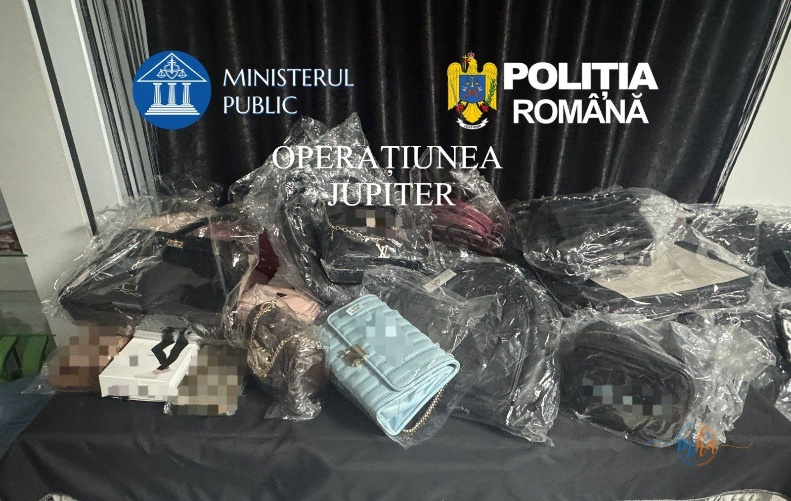
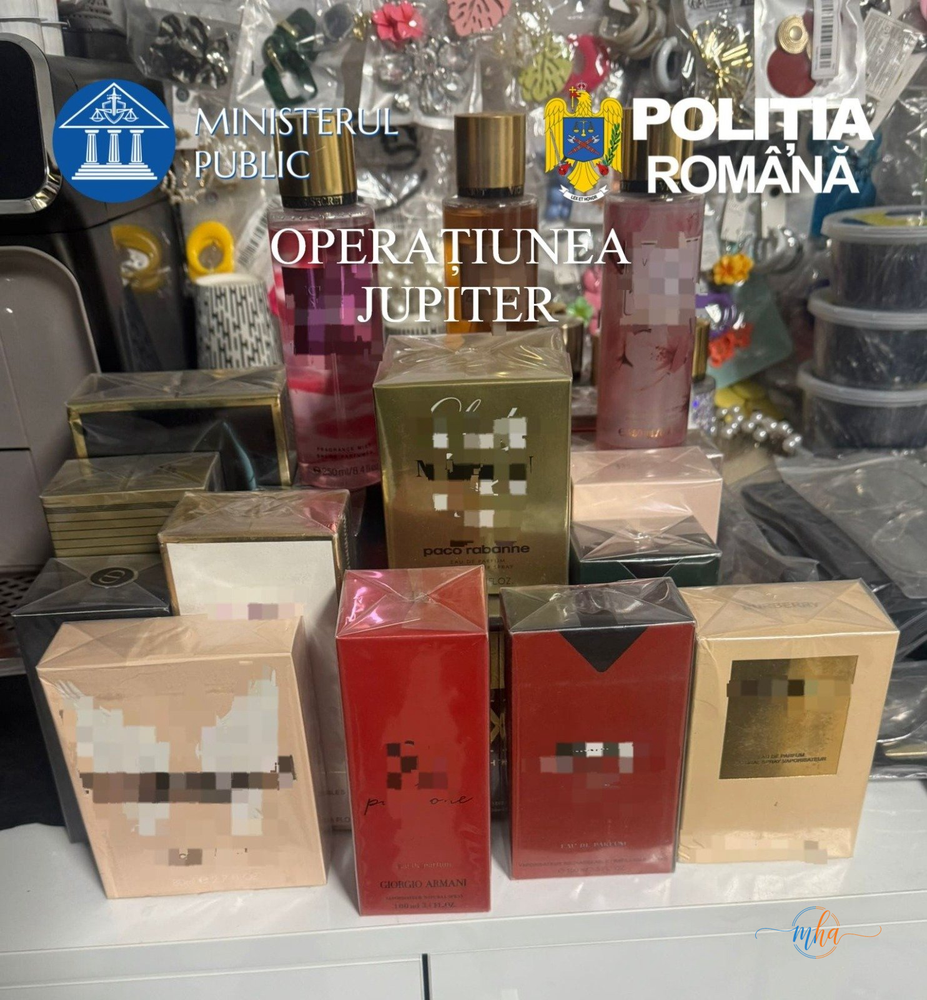
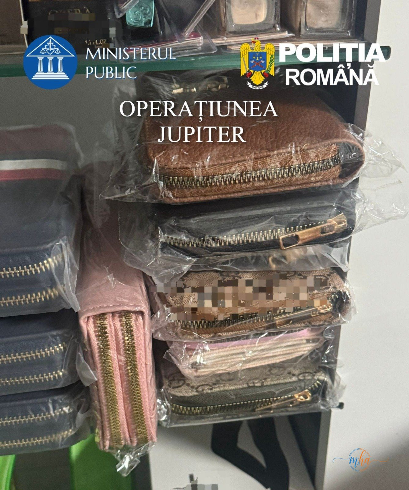
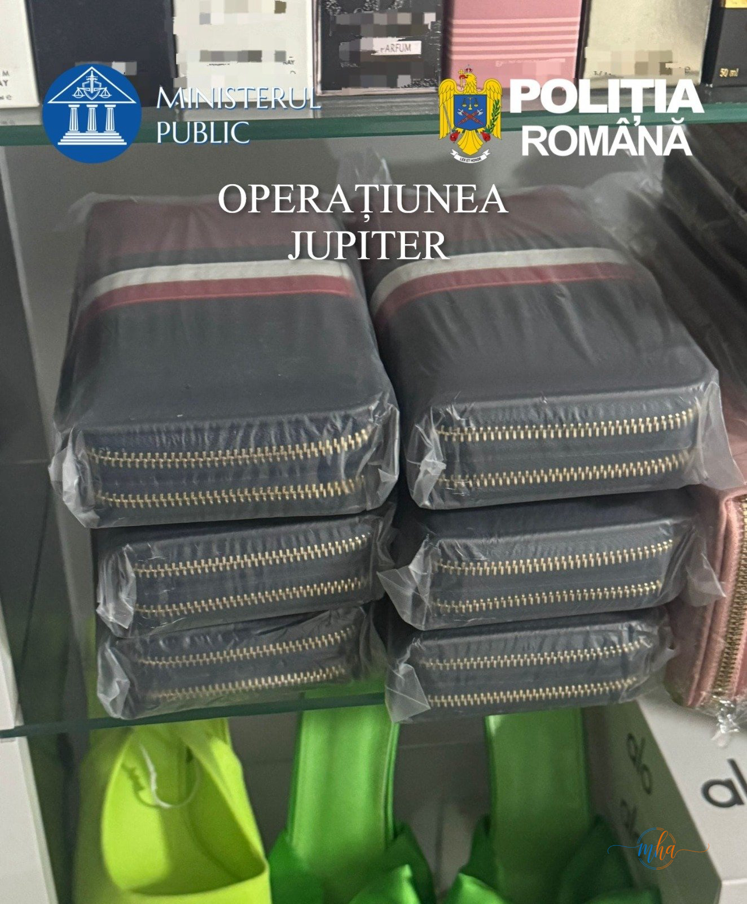
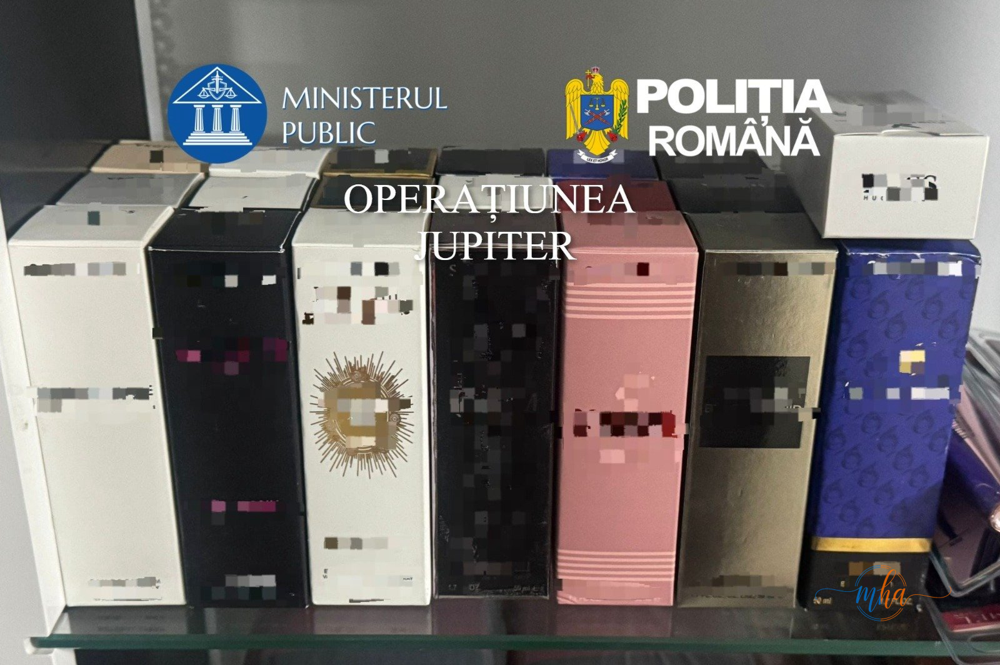

- Operațiunea națională JUPITER — coordonată de PICCJ și IGPR
- Data acțiunii: 27 aprilie 2026, comuna Șimian, județul Mehedinți
- Percheziție la locuința unei femei de 31 de ani
- Ridicate: 113 articole — genți, parfumuri, obiecte vestimentare
- Valoare estimată: aproximativ 36.000 de lei
- Produsele prezentau mărci/sigle protejate intelectual, susceptibile de contrafacere
- Dosar penal deschis pentru punerea în circulație de produse cu mărci contrafăcute
La data de 27 aprilie 2026, polițiștii din cadrul Serviciului de Investigare a Criminalității Economice (SICE) Mehedinți au pus în executare un mandat de percheziție domiciliară în comuna Șimian, județul Mehedinți, în cadrul Operațiunii naționale JUPITER.
Acțiunea s-a desfășurat sub coordonarea Parchetului de pe lângă Înalta Curte de Casație și Justiție și a Inspectoratului General al Poliției Române — o operațiune de amploare națională, care vizează combaterea comerțului cu produse contrafăcute pe întreg teritoriul României.
Ce au găsit polițiștii la percheziție
Din verificările anterioare, polițiștii au stabilit că o femeie de 31 de ani, din comuna Șimian, ar deține la locuință un număr semnificativ de bunuri purtând mărci și sigle protejate intelectual, susceptibile a fi contrafăcute. Suspiciunile s-au confirmat integral la percheziție.
Oamenii legii au descoperit și ridicat 113 articole, împărțite în trei categorii principale: genți, parfumuri și obiecte vestimentare. Toate produsele prezentau inscripționate sigle și mărci ale unor branduri de lux protejate intelectual și au fost evaluate la o valoare de aproximativ 36.000 de lei.
ridicate
estimată
genți, parfumuri, haine
Galerie foto — produsele ridicate în Operațiunea JUPITER





Infracțiunea — punerea în circulație de produse cu mărci contrafăcute
În cauză, se efectuează cercetări sub aspectul săvârșirii infracțiunii de punere în circulație a unui produs purtând o marcă identică sau similară cu o marcă înregistrată pentru produse identice sau similare — faptă prevăzută și pedepsită de Legea nr. 84/1998 privind mărcile și indicațiile geografice.
Comerțul cu produse contrafăcute prejudiciază grav atât producătorii autentici, cât și consumatorii care cumpără în necunoștință de cauză produse de calitate inferioară. Operațiunile de tipul JUPITER vizează dezarticularea acestor rețele la nivel național.
— IPJ Mehedinți
- Operațiune națională coordonată de PICCJ (Parchetul de pe lângă ICCJ) și IGPR
- Vizează combaterea comerțului cu produse contrafăcute pe întreg teritoriul României
- Implică polițiști din toate județele, prin Serviciile de Investigare a Criminalității Economice
- Acțiunile sunt coordonate simultan în mai multe județe
- Produsele ridicate sunt expertizate pentru a stabili dacă sunt sau nu contrafăcute
Ce riscă persoana cercetată
Fapta de punere în circulație a produselor cu mărci contrafăcute este sancționată de legislația română cu pedepse privative de libertate. Dosarul va fi instrumentat de SICE Mehedinți sub supravegherea parchetului, urmând ca probele ridicate să fie supuse expertizelor de specialitate pentru a confirma sau infirma suspiciunile de contrafacere.
- Legea 84/1998 — închisoare de la 3 luni la 2 ani sau amendă pentru punerea în circulație a produselor cu mărci contrafăcute
- Produsele ridicate sunt confiscate și, după caz, distruse
- Paguba adusă titularilor de mărci poate angaja răspunderea civilă suplimentară
- Recidiva atrage pedepse agravate
Cercetările continuă. Femeia de 31 de ani din Șimian beneficiază de prezumția de nevinovăție până la pronunțarea unei hotărâri judecătorești definitive.